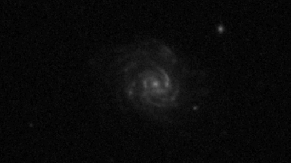
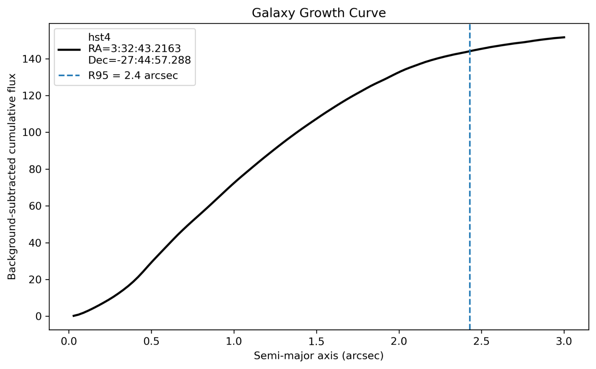

Exploring the Universe: My Experience at the Galactic Astrophysics Workshop
Hello friends,
Recently, I attended a three-day IUCAA-sponsored workshop on Galactic Astrophysics at Nirmala College, Muvattupuzha, from 12–14 June 2026. Currently, I am exploring various domains within Astrophysics. Previously, I had some experiences in Asteroids, Exoplanets, Solar physics and currently this workshop helped me to explore galactic astrophysics as well. I really enjoyed these three days, and I especially loved the trip from Chennai to Kerala, as it was my first time visiting the state. The journey from Chennai to Kerala was fantastic. The climate and scenery were beautiful, and I understood why people call Kerala "God's Own Country". Coming to the workshop part, it was really helpful for me, and the lectures by the professors were very useful and thoughtful. In particular, I really enjoyed the hands-on session where we used the DS9 software to learn how to find the size of the galaxies.

The Power of Visualization: Working with DS9
Let us see more about that. For this hands-on session, we used the DS9 Image Viewer, which is a widely used tool for visualizing and assessing the FITS images. At first, everything felt a bit difficult to follow, but as time went on, everything felt very easy, and I found it really interesting, particularly the visualization of the galaxies in the FITS image we got, which really made me enthusiastic. Even though we have seen pictures of the galaxies on the internet, seeing the actual data with our own hands was really a wonderful experience. Basically, what we did was really a beginner-level basic project, where we use the DS9 software to view the fit image containing galaxies, for that we used the image captured by the UVIT, HST and the JWST instruments. We use the image taken in the same part of the sky but using different telescopes. Some people might wonder what the difference is between these instruments because all these instruments take the same part of the sky, and what difference it will make, but the truth is, this is where the real physics is hiding. Basically, these instruments capture the different wavelengths of the electromagnetic spectrum emitted by the source; in our case, it is galaxies. Usually, these galaxies show distinct features on different wavelengths.
| Instrument | Spectrum Captured | Key Features Observed |
|---|---|---|
| UVIT | Far and Near UV | Young massive stars, star-forming regions, starburst activity |
| HST | UV, Visible, Near-IR | Spiral arms, dust lanes, stellar populations, morphology |
| JWST | Near and Mid IR | Cold dust, molecular clouds, AGN, high-redshift galaxies |

Basically, it is taking scans in hospitals. I was primarily interested in the HST image, and I analyzed the HST image. I saw a wonderful scenario where I was able to see multiple galaxies within a few areas, and I could also see galaxies with different morphologies like spiral galaxies, elliptical galaxies and so on. For my analysis, I chose a spiral galaxy with a face-on view. In this analysis, the galaxy was fitted within an elliptical boundary. And then we used the RA and DEC, the ellipticity of the boundary we used and the position angle of the boundary, the background pixel value to calculate the size of the galaxy in arcseconds by the growth curve plot, which plots the semi major axis vs cumulative fluc subtracted from the background value.
Analysis and Results
So, we were able to find that the size of the galaxy we observed was 2.4 arcsec in radius. In this plot, basically, it plots the semi major axis with the cumulative flux so that once the galaxy edge is reached, the curve becomes saturated, hence we can say this as the approximate radius of the galaxy. Here, the 2.4 arcsec is only the size of the galaxy we measured in the image. Physically, we can't predict the actual size because a galaxy of the same size might be very far away and appear small and some might be close, which appear big. For that, using the redshift of the galaxy, we can find the actual size of the galaxy. We were also given the catalogue containing the redshift value of the galaxies. Then, with the help of the cosmological calculator available on the internet to find some actual parameters of the galaxy. So first and foremost, coming to the physical size by using the redshift value and the cosmology calculator for an object to be redshifted at a rate of 0.5328 for every 1 arcsecond of angular size of the galaxy spans on our detector, its actual physical size is 6.379 kiloparsecs/ arcsecond, so we found our galaxy width to be 2.4 arcseconds. By multiplying the scale value and the size in arcseconds, we observed the size of the galaxy to be 15.3096 kpc in radius, which is about ~ 30.6192 kpc in diameter. And with some formulation, I calculate the apparent magnitude of the object to be ~21.06 and the absolute magnitude of ~ -21.39. These values suggest that this galaxy is approximately the same size as our Milky Way galaxy and slightly brighter than our Milky Way galaxy.
Conclusion
Finally, from this workshop I were able to learn many useful things which really helped me in refining my career in Astronomy, and I was able to learn a lot of new information like processing the FITS file and getting physical values for the file. I really thank everyone who made this workshop possible.